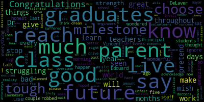
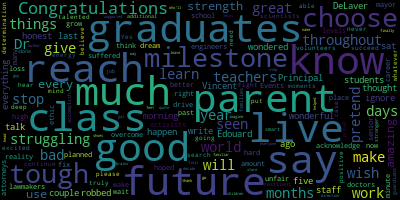

total time: 3.52 minutes
total words: 506

{kind=link}
total time: 6.94 minutes
total words: 711

[D'Alleva]: There's the Senior Class Vice President, Ketli Osias. Senior Class Secretary, Isabella D'Souza. Senior Class Treasurer, Elijah Fortune. Class 2020 Faculty Advisors, Ms. Nancy Donlan and Mr. Joe Donlan. Class of 2020 Assistant Principal, Mr. David Blauch. Class of 2020 Student Secretary, Ms. Karen DeAngelist. director and principal of Medford Vocational Technical High School, Mr. Chad Fallon, assistant of Medford Vocational Technical High School, Ms. Beth Fitzpatrick, and principal of the Curtis Tufts High School, Ms. Lisa Kingsley. In just a few moments, the class of 2020 will be announced to mark their graduation from high school. These graduates represent years of hard work, commitment, dedication, and achievement. It's important that you recognize your place and your responsibility as a class and the legacy you inherit from previous graduates. You are now members of a long and distinguished list of alumni, men and women like yourselves, who've gone into the world and have brought with them the qualities which have historically marked a Medford High School education. It's been a journey that started with tentative steps, but one that's taken us to remarkable heights. This year, we encountered some trials and tribulations along the way. As students, you soldiered on and came out to be stronger in the end. During my time here with the Class of 2020, we've experienced exceptional moments, magical moments, and created memories that will be fondly remembered in the years ahead. But this group of seniors is much more than grade point averages, inspiring recitals, and championships. This class is unique, not only because what it's accomplished, but how they accomplished it. They took great care of each other. To me and many others, the class of 2020 will be known as the chosen ones. The class of 2020 is the chosen class to begin the change the world needs, the change of focus on appreciation, gratitude, support, and collaboration. You are the class that began the movement that showed a heightened appreciation for teachers, healthcare professionals, and essential workers who risk their lives every day so we can stay healthy and safe. You are the chosen ones that had a parade in your honor, to have faculty and staff deliver signs for your lawn, to have the school administration prepare your caps and gowns, and we know you will miss more than you can ever imagine. You are learning that this country and the world needs to support one another to collaborate and advocate peacefully for social justice. Although this pandemic has taken many things from you, it has also given the opportunity to highlight what is truly important, family, friends, health, and your community. So as you continue your journey to change the world, do so by acknowledging, respecting, and celebrating our differences. Take the opportunity to find out more about what you have in common with someone instead of focusing on what separates you. Find your voice and learn to use it. Speak, express, and let yourself be heard. But also take the time to listen and hear what people are saying. Try to understand another person's point of view, especially when it's different from yours. Always be kind and try to live with an open heart and open mind. You will forever be the chosen class. Soon you'll begin having conversations and hear yourself say statements like, those things happened before COVID-19, or that is what happened pre-pandemic times. You remember when teachers and students were in the same room, and we used to fill the gym as many people as we could to enjoy the annual Thanksgiving Day pep rally, and we didn't even have to wear masks. So take all these lessons that you learned at your time at Medford High School, not just in the past, but your school career, and let them guide you, inspire you, and remind you that you are Medford Strong. I know that I will be saying those things around when people complain and say things like, that's too hard, or we can't do it. My response will be, if you think those statements are true, first let me tell you about the Medford High School 2020. They were the first class that was resilient, tenacious, creative, talented, and resourceful. They were the class that began the change in our world that could handle anything that was thrown their way, even a global pandemic. It's been an interesting year without question. It's important to not let the state of the world discourage you. The resilience that you have shown is why the class of 2020 graduates are not only the envy of the world, but the hope for our future. The spotlight is on you. Remember that no matter what this is for this year, you can make it whatever you want. Every journey is different, and every journey is a new chance. Make this journey yours. Allow me to offer you a bit of advice going forward. No matter where you are or what you're doing, take it with a positive attitude. Try to surround yourself with people who remind you how amazing you are. Do what you love, be inquisitive, and never stop learning. In every speech I state this. Every morning in the MHS foyer that's posted in our school, it states, through these halls walk the best students in the nation. No truer statement represents the class of 2020. Congratulations to you all. At this time, I'm delighted and proud to call to the podium the class of 2020's choice to give the faculty address, Mr. Jonathan Brown.
[SPEAKER_05]: Good morning, class of 2020. Yesterday, I told Sherbie, a junior, that I was very worried that I wouldn't know what to say today. And she told me that all I had to do was keep it a buck. So that's what I'm going to do. You may remember way back when you were in the ninth grade, sitting in your ELA classroom, and your teacher stood before the class and mentioned those two words that many of you dread to hear. Oral presentation. And those two words filled your soul with anxiety. Those two words made your stomach drop from your body and hit the floor. Those two words immediately made you break out in a cold sweat. Congratulations, today you have your revenge. I've been teaching at Medford High School in the vocational school for 20 years. And I have no doubt in my mind that I have the best job in the world. I get paid to spend a lot of time with some of the most creative, friendly, thoughtful, open-minded people in the world. And of course, I'm talking about you. You have made me smile. You have made me laugh. You have made me challenge myself in the way that I see the world around me. You're a father and a man. Without you, I would not be the person I am today. I want you to know these things because I want every one of you to realize that you have the tremendous power within yourselves to have a profound impact every single day on the life of someone else. Every person you encounter every day is a chance for you to shine. It doesn't matter if this person is someone you know fairly well or someone who is a total stranger to you. A smile, a nod, a greeting, a laugh, a compliment, a word of a gesture of goodwill. Small acts of kindness and humanity can make the world of difference in someone else's day. And I speak from experience that the investment you make with any small act of humanity will pay dividends tenfold down the road. I know in my heart that each of you has the awesome potential to bring light into the world and I exhort you today to act on this potential. The hardest part of my job is that every year I have to say farewell to so many great people, and this year is no exception. While I do not know all of you by name, I know almost all of you by your faces. Whether you were a student in my class, a Driver's Ed student, a student I walked by in the hallway, a student I watched in a pep rally, either as a participant A student playing on one of our teams, a student attending a sporting event, or a student I saw in any other capacity, I noticed you. And the way you conducted yourselves, both in and outside the school, always filled me with immense joy and pride. You are Medford's finest. I will miss you, every single one of you. We will miss you. Even though today you will officially be graduates of Medford High School, you will always be a part of our extended Mustang family. Keep in touch and let us know of your successes, of which I'm sure there will be many. I know you will make us proud. Thank you.
[D'Alleva]: For our address of welcome, it is my distinct pleasure to invite the class of 2020 president who will be attending Tufts University in the fall, Mark Allen Gene Mary.
[SPEAKER_04]: Good morning, future leaders. On behalf of the class of 2020, I want to thank all those who helped us reach where we are today. The parents, family members, friends, teachers, faculty, staff, Mayor Longo-Cohen, Superintendent Vincent, the school committee members, and those who live with us in spirit as well. This speech was supposed to be the moment where I tell you all, right at the beginning of summer, goodbye and good luck. But this year has been a wild roller coaster ride. One Thursday, we woke up and went to our last day of high school without even knowing it. walked into our homeroom one last time, heard Eli and Catherine do the morning announcements one last time, and had lunch with our friends in the cafeteria one last time without even knowing it. These past couple months has also shown us that there are still inequalities, violence, and hatred in our world, to a degree which has shocked and even terrified many of us, especially here in America. The problem of the 20th century is the problem of the color line, as W.E.B. DuBois puts it. That much of the push for equality that started centuries ago is still necessary nowadays, if not more crucial. With everything that has happened during these past months, it has been hard to also appreciate the good that's persisted throughout our journey. There is an old Haitian proverb that says, beyond mountains, there are more mountains. Life is a constant climb, where we take on hill after hill, challenge after challenge. But every once in a while, we stand at the summit, realizing the climb was worth it, and appreciating the beauty around us. Even when we can't see the end when climbing, we should use these bright moments as reminders to motivate us through tough times. Recall a moment like the excitement of our first football game, dressing our Mustang white and blue, our pep rally where we showed the other classes who the seniors were, or the soccer semifinals where we stood united behind our soccer players who fought to play. Through these moments, our class showed what it meant to be Mustangs, being motivated, resilient, and most importantly, united. Although we did not end our year as we hoped to, we have to remember the moments that made it were all worth it. When I first walked through the Medford High School as a new sophomore kid from Haiti, I never imagined that I would have the honor to represent and take on this journey with you all. Never imagined I would feel the passion, energy, and vigor that this class has. I have watched as this very energy and passion have driven the class officers, Ketley, Isabella, Elijah, Emily, our class advisors, Mr. Donlan and Mrs. Donlan. It has been an honor working with them. This is only the end of a single chapter in our story. When we reunite in 10, 20, 50 years, we'll do so as the future leaders, the future force of tomorrow. As I celebrate with you here today, I can only ask you to get ready to face the world, and most importantly, leave your mark on it. Thank you very much, and congratulations, class of 2020.
[D'Alleva]: at this point to introduce to you the chairperson of the Medford School Committee and the mayor of the city of Medford, the Honorable Breanna Lungo-Koehn.
[Lungo-Koehn]: Good morning, Dr. Edouard-Vincent, Principal DeLaver, staff, parents, teachers, and graduates. As I sat down to write a couple days ago, I wondered what I say. What should I say to a class of students that have been through so much in the last five months? A class that has been robbed of so much. I thought I should ignore the bad, pretend it didn't happen, and talk about how wonderful everything is. Or should I be honest and acknowledge your reality? It is unfair the amount of loss that you have suffered and the things that you've had to give up during your senior year. Events you have planned and hoped for throughout your high school career. I wish as your mayor and as a parent, I could fix that for you. I wish I could just wake up and pretend it was all a bad dream, but I can't. We live in a world that is struggling right now, struggling on so many levels. But you know what makes me stop? Stop and think and say, wait a minute. There is good here. There is good. No, there is great here because you are our future. You all have overcome so much, not just this past year, but throughout your lives and work so hard to reach this milestone. You have the will, the drive, and the work ethic to make this world a better place to live, learn, and grow in. You are our future doctors, engineers, and attorneys. You are our future lawmakers, activists, volunteers, and scientists. You are able to be whatever you put your mind to. I've seen your determination and your strength, and I've seen how talented this class of 2020 truly is. I am so excited to continue to hear and learn about all the amazing things you will do. Yes, you're going to have tough days, tough moments, and in this case, tough months. But please choose to never give up. Fight for what you believe in, search deep for the positive, and use that as the energy you need to succeed and reach every additional milestone you choose to accomplish. You are smart and resilient. You are stronger because of what you have been through. Use that strength. To all of the parents and guardians, you have done an amazing job and you should be so proud. Congratulations to all of the graduates. Congratulations to the families who have supported them every step of the way. And finally, congratulations to the teachers and everyone else who have helped our graduates reach this milestone. I leave you with this final quote from a great author with whom I imagine you are familiar, as my children are. His name is Dr. Seuss. You have the brains in your head. You have feet in your shoes. You can stare yourself in any direction you choose. You're on your own, and you know what you know. You're the guy or the gal who'll decide where to go. And thank you.
[D'Alleva]: It is with great honor for me to introduce, at this time, the leader of the Medford Public Schools, the superintendent of schools, Dr. Marice Edouard-Vincent.
[Edouard-Vincent]: Good morning, Mustang Nation. I'm so excited to be here because we are celebrating you, the class of 2020. So again, I have a few remarks to share. Please indulge me, but I want you to just enjoy this time, enjoy this celebration because we are celebrating you, whether you're in your living room or your kitchen, doesn't matter where you are, but we are there with you. And so I'm so glad to share this message. So good morning, Mustangs. Again, as I said, although this is not the graduation ceremony you may have envisioned, the Medford Public Schools still wanted to provide you and your family with the means to celebrate your wonderful achievements. Due to COVID-19, your senior year was cut short and your graduation ceremony was canceled. You all learned an important lesson. How following the rules is paramount, critically important during this unprecedented time. COVID is alive and well and lurking everywhere. Therefore, the precautions of always lies on this issue. We must be vigilant and focused. What I do affects each person I come in contact with. I respectfully request that we all follow the directives put forth by the CDC, Governor Baker, and Medford's Board of Health. The rules and regulations are provided for everyone's well-being. Additionally, during this COVID crisis, All of us witnessed the horrible killing of Mr. George Floyd. Everyone, what it is like to grow up black and brown in America. I know so many of you have raised your voices in support of Black Lives Matter. I think about the late Congressman John Lewis who stated, If not us, then who? If not now, then when? Continue to work for social justice, equality, and remember that love always wins. You are at a crossroads right now in your lives. Our world is rapidly changing, and you will be presented with new challenges, new routines, and new situations. You will be asked to evolve and find the strength to explore your life outside the comfort zone of Medford High School. You will grow in ways you never imagined before. It is my hope that in true Mustang fashion, you will speak your truth, spread love unconditionally, stand up for what you believe in and treat people the way you want to be treated. Mistakes, we all do. But mistakes mean you are trying and you will learn from them. do not allow this current situation to define you. Instead, look upon it as a bridge to opportunity, as a way to build your character and open the door to new possibilities. As President Obama said in his graduation remarks to the class of 2020, ground yourselves in values that last. like honesty, hard work, responsibility, fairness, generosity, and respect for others. Commit to moving this world onto a day where sexism, greed, status, and racial prejudice no longer exist. So today, we come together and celebrate the class of 2020. Please take the time to say thank you to your parents, to your grandparents, to your relatives, your caregivers, your teachers, your advisors, your coaches. Take a moment now, those of you on Zoom or on TV, give them a hug, embrace them, say thank you. They helped you get here today. They had your back the entire way. We wish you nothing but luck and happiness as you move forward with college, a career, or as you enter the military. COVID-19 may have stopped this class from seeing their usual senior graduation events. but I believe it has taught all of us something. Resilience. Never again will you take anything for granted. Never again will you think what you do does not affect others. More than ever, I am sure you now appreciate everything you have It is my belief that COVID-19 has made you wise beyond your years. Your Mustang roots, that the blue and white will forever run through your veins, and that the Mustang way is a way of life. Be well, be safe, be kind, and never stop reaching for the stars. Good luck and do remember, you just can't tame the Mustangs. When I say Mustang, you say pride. When I say Mustang, you say pride. Mustang. Mustang. Congratulations to the class of 2020.
[D'Alleva]: It is another great honor for me to introduce our guest speaker today. This person began work in the City Laws Department in January of 1984. In June 2001, former Mayor Michael J. McGlynn appointed him to be the city solicitor after Robert Bloomsack retired. He himself is now retired, but is still in a suit, running errands, and being busier than ever. This includes his duties as deacon at St. Raphael's Church. Please give a warm welcome to Mr. Mark Rumley.
[Mn4KS2yu_8U_SPEAKER_00]: Well, good morning. And we have a lot of words are used. You hear a lot of them today. Most of them, if not all of them, are uplifting words. The words you've been waiting to hear, especially this year. Words like good luck, congratulations, you did it. And from your parents, grandparents, aunts, uncles, godparents, those who are closest to you, you'll hear the words that are the sweetest. I love you. I'm proud. And it's my honor to join those voices today to congratulate you. But with my congratulations to you, I want to offer, very briefly, four observations that I'm confident will assist you, whether You are entering the workforce, going on to further education, enlisting in the military, or even if you have no idea what you're going to do next year. Now, my first point is the simplest, but it's sometimes the most difficult, and it is this. I urge you to take every negative message that has ever been directed towards you and throw it away. Graduation is a time for reflection. And as you look back on the past, try to recall every time that someone said to you, you can't do that. You're going to try to do that? Are you kidding? You? Sometimes, these can't-do messages are given by people who love you very much and care about you, but they may be afraid that either you'll fail or worse, you may get hurt. Other times, these can't-do messages are given by people that are just plain old flat-out negative, and negative people pass on their negativity to others. So at this time of your graduation, it's a time to stop listening to can't-do messages. It's a time to throw them out and to exile them into the trash bin of your entire life is ahead of you. There is no need and no point to being slowed down by negative statements, messages, or influences. The only thing in front of life's possibilities And that brings us to the second point. Find out what it is that you love to do, and you'll excel at it. So what is it that you love to do? What's your passion, your singular, unique passion? What is it that speaks to your soul? What is it that animates your heart? And the answer to these questions will not come from your intellect. They will not come from some type of intellectual exercise. They will come from your heart. So embrace this effort and find your passion. And when you do, you'll find your life. I've been an attorney for 41 years. And I'll leave it to other people to say whether or not I excelled at it. But I know this. I have loved every one of these 41 years, and especially and first among them, the 36 years that I spent in the law department of the city of Medford, 20 of which I served as city solicitor, chief legal counsel for the city. Now, the record will show that I worked for two city managers, John Galony and Richard Lee, and two mayors, Mayor Michael J. McGlynn and Mayor Stephanie Burke. But the record can never show the great pride and enjoyment that I felt for one simple reason. I represented the people of the city of Medford, the city where I was born, City where I met my wife, where we married, raised our family, and still live. But it has to be said that whatever your passion may be, whatever profession you choose, there will be times of difficulty. But when you love what you do, when you care about what you do, it will be much easier to ride out the rough patches of the tough times. Your passion will allow you to persevere through any
|
total time: 3.52 minutes total words: 506  |
total time: 6.94 minutes total words: 711 |
||